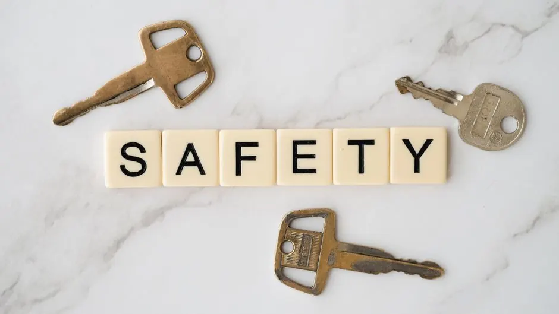

Why is my safe not opening and what can I do?
Learn about common reasons your safe won't open and effective solutions to regain access.

A safe that won't open can be incredibly frustrating. The reasons can range from a simple mechanical failure to more complicated issues like forgotten codes. This article will explore why your safe may not be opening and what steps you can take to resolve the issue.
A safe is a secure storage unit designed to protect valuable items from theft, fire, and other hazards. Understanding the common reasons behind a safe malfunction can help you regain access efficiently.
Why is my safe not opening?
Several factors can lead to a safe not opening. The most common reasons include mechanical failures, dead batteries, forgotten combinations, and environmental factors affecting the locking mechanism. Each of these issues has its own set of solutions, which will be discussed in detail below.
Common reasons safes won't open
Understanding the reasons behind your safe's malfunction is crucial. Here are some of the most frequent issues:
- Dead Batteries: Electronic safes often rely on batteries. If these batteries are dead, the safe will not open.
- Forgotten Combination: Forgetting the combination is a common issue, especially if it hasn't been used in a while.
- Mechanical Failure: Over time, the mechanical components can wear out, leading to a failure in the locking mechanism.
- Environmental Factors: Humidity and temperature changes can cause parts to expand or contract, affecting the safe's ability to open.
- Lock Malfunction: The lock itself may be jammed or broken, preventing it from engaging or disengaging properly.
What to do when your safe won't open
If your safe isn't opening, here are steps you can take:
- Check the Power Source: If you have an electronic safe, replace the batteries. Most safes will have a backup key option if the battery is dead.
- Reset the Combination: Refer to your owner's manual to see if there's a method to reset the combination.
- Inspect for Mechanical Issues: Check the locking mechanism for any visible signs of damage or blockage.
- Use Graphite Powder: If the lock is jammed, applying graphite powder can help lubricate the mechanism.
- Environmental Adjustments: If humidity is an issue, try using a dehumidifier in the area around the safe.
For those in Stockton, California, these tips can help you troubleshoot the issue before calling a professional.
Common mistakes when trying to open a safe
When attempting to open a malfunctioning safe, avoid these common pitfalls:
- Forceful Attempts: Trying to force the safe open can cause more damage, making it harder to access later.
- Ignoring the Manual: Many safes come with specific instructions that can help troubleshoot issues effectively.
- Using the Wrong Tools: Using improper tools can damage the locking mechanism and void warranties.
- Not Keeping Records: Failing to write down combinations or reset codes can lead to future access issues.
When to call a professional
If you've tried the above solutions without success, it may be time to call a professional locksmith. A qualified technician can assess the problem and provide effective solutions. At Locksmith Near me Finder, we offer Emergency Locksmith Services in California that can assist you promptly.
Frequently Asked Questions
1. How much does it cost to open a safe? The cost can range from $50 to $300 depending on the complexity of the lock and the service required.
2. Can I open my safe without a key? Yes, many safes have backup options or can be opened by a locksmith through professional methods.
3. How long does it take to open a safe? Typically, it can take anywhere from 30 minutes to a few hours, depending on the type of safe and the issue.
4. What should I do if my safe is damaged? If the safe is physically damaged, contact a locksmith immediately to assess whether it can be repaired or needs replacement.
5. Are there safes that are impossible to open? While most safes can be opened with the right tools and expertise, some high-security models are extremely difficult and may require specialized services.
For any locksmith needs in Stockton, California, reach out to us for reliable assistance.